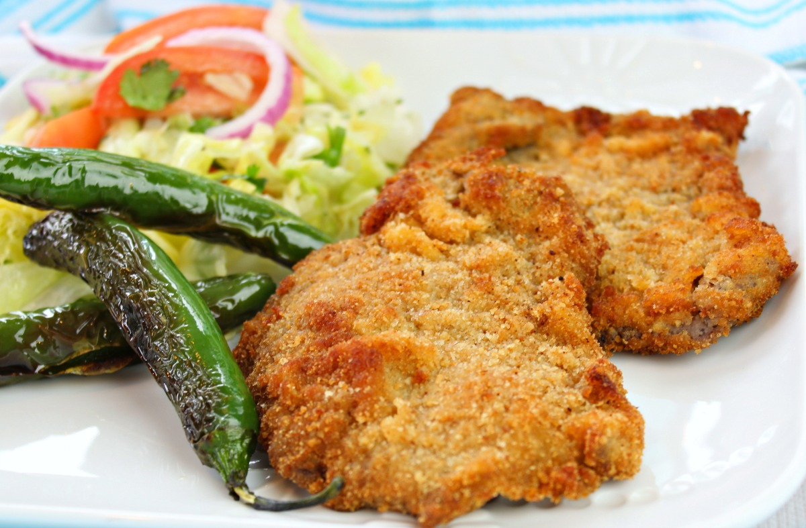

Beef Milanesas

Entrée Breakdown
Milanesa is a popular dish in Latin American cuisine, consisting
of breaded and fried thin cuts of steak. This crispy and flavorful
dish is often enjoyed with lemon wedges and served with sides like
mashed potatoes, salad, or rice. Simple to prepare and delicious,
Milanesa is perfect for a satisfying meal that brings a taste of
comfort and tradition to your table.
Ingredients
- 4 thin steak cuts (such as sirloin or round steak)
- 2 cups breadcrumbs
- 1 cup all-purpose flour
- 2 large eggs
- 1/4 cup milk
- 2 cloves garlic, minced
- 1 tablespoon fresh parsley, chopped (optional)
- 1/2 teaspoon salt
- 1/2 teaspoon black pepper
- 1/2 teaspoon paprika
- Vegetable oil for frying
- Lemon wedges for serving
Instructions
-
Prepare the Steaks:
- Pound the steaks with a meat mallet to tenderize and thin
them out if they are not already thin.
-
Set Up the Breading Station:
- Place the flour in a shallow dish.
- In another shallow dish, beat the eggs and mix in the milk, minced garlic, salt, and pepper.
- In a third shallow dish, combine the breadcrumbs, paprika, and chopped parsley if using.
-
Bread the Steaks:
- Dredge each steak in the flour, shaking off any excess.
- Dip the floured steak into the egg mixture, coating it thoroughly.
- Finally, coat the steak with the breadcrumb mixture, pressing
gently to ensure the breadcrumbs adhere well.
-
Fry the Steaks:
- Heat about 1/4 inch of vegetable oil in a large skillet over medium-high
heat. Once the oil is hot (you can test it by dropping a small piece of
bread into the oil – it should sizzle and turn golden quickly), carefully
place the breaded steaks into the skillet.
- Fry the steaks for about 3-4 minutes on each side or until they are golden
brown and crispy. Adjust the heat as necessary to prevent burning.
-
Drain and Serve:
- Remove the fried steaks from the skillet and place them on a plate lined with paper towels to drain any
excess oil. Serve the milanesa hot with lemon wedges on the side for squeezing over the top.